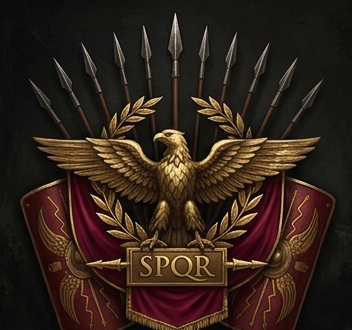
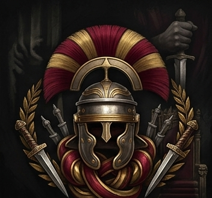
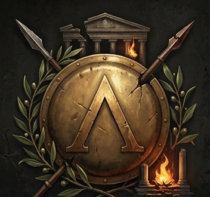
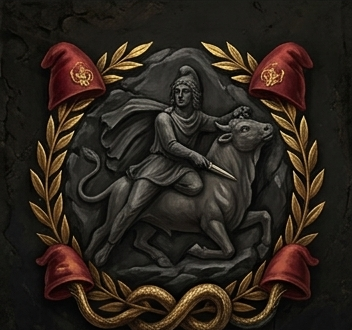
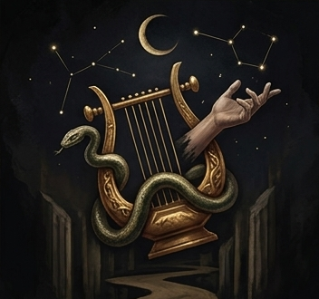
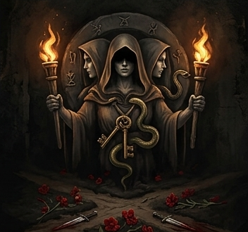
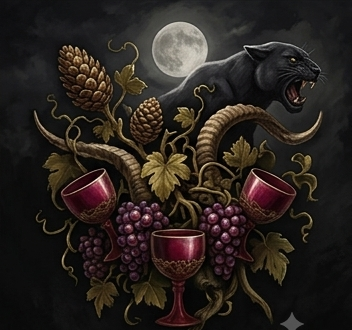
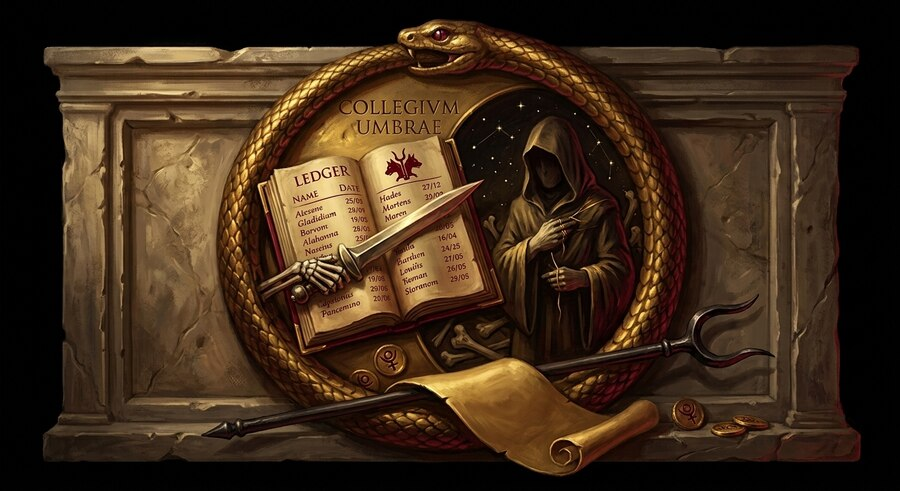

Orders & Cults
The world of Rome: The Eternal City is shaped by public Orders who march beneath banners and secret Cults who whisper in the dark. Orders operate openly - military, civic, and political - while Cults trade in mystery, ritual, and hidden power. Every faction below leans toward one of three moral auras - Light, Grey, or Evil - so whatever kind of story you want to play, there's a real home for it.
Public Orders

Imperial Legion
LightLoyalty to Rome the institution - not to any one emperor, but to the eagle standards themselves, and the empire they've carried for centuries.
Overview: The iron backbone of the Empire - endless columns of disciplined steel that have marched the roads from Britannia to the Euphrates. A legionary's world is order: the weight of a scutum on the arm, the rhythm of drilled formation, the certainty that the man beside him will not break. Rome's borders exist because the Legion has bled to hold them, campaign after campaign, generation after generation.
Why join: Recognition and rank among a real chain of command, access to frontier-campaign content, and a natural home for anyone playing a Legionary, Gladiator, or Barbarian.

Praetorian Order
GreyProximity to power, and the leverage that comes with it - the throne matters less than who's really holding its strings.
Overview: The Praetorians stand closest to power - close enough to end it. Officially the Emperor's own guard, they have made and unmade rulers more than once, and every man who wears their crest knows it. Politics is their true battlefield: a well-placed word in the right ear does more than any blade. Ambition here isn't a flaw. It's the entrance fee.
Why join: A tracked reputation among the Guard - real tasks for ranking officers earn real Favor, spent on privileged access, discounted training, and titles most will never hold - plus a standing seat at the Colosseum's own Senatorial Podium, the single best view in the arena.

Hellenic Resistance
LightPreserve Hellenic freedom, culture, and self-governance against total Roman absorption.
Overview: In the shadow of Roman eagles, the old free cities have not forgotten what they were. Spartan blades still gleam in hidden armories; Athenian exiles still argue philosophy over the wreckage of their democracy; frontier warbands still raid supply lines under a moon that answers to no emperor. The Resistance is scattered, stubborn, and impossible to fully stamp out - because it isn't one army. It's an idea that refuses to die.
Why join: A running network of smuggling and sabotage missions - each successful run undermines Roman supply lines a little further and builds real standing within scattered resistance cells. A natural home for Venator or Speculator characters, with deep thematic ties to the Hellenic gods - Artemis and Apollo above all.
Secret Cults
Cults are hidden, invite initiation, and often pursue agendas that reach beyond mortal law. Discovering one - and being trusted enough to join - is meant to be a real roleplay journey, not a menu option.

Cult of Mithras
LightAn incorruptible order above Rome and above any single ruler - a secret check on the corruption of empire, not a bid to control it.
Overview: Deep beneath the city, in chambers carved from living rock, initiates kneel before the bull-slaying god by torchlight and swear oaths that outlast careers, marriages, even loyalty to Rome itself. The Cult of Mithras exists in every legion camp and every marble corridor of power - a hidden thread of incorruptible brotherhood running beneath an empire that badly needs one. They do not seek power. They seek to outlast the men who abuse it.
Why join: Access to a hidden mithraeum, and a trust network that crosses every other faction line - a Mithras initiate in the Legion and one in the Senate recognize each other on sight, whatever banners they otherwise fly.

Orphic Mysteries
GreyMaster the soul's own journey through death and rebirth - understanding your fate well enough to face it without fear.
Overview: They speak in riddles and sacred songs of a god who walked into the underworld and dared to look back. The Orphics believe death is not an ending to fear but a passage to understand - and that a soul which learns its own mysteries in life need not dread what waits after. Poets, philosophers, and quiet seers gather by lamplight to trade half-remembered verses and half-glimpsed truths, chasing not power over the dead, but peace with their own mortality.
Why join: Unique insight and dialogue at the Underworld's Threshold of Return - initiates who've studied the old rites are said to find their own way back easier than most.

Cult of Hecate
EvilCommand power over life, death, and fate itself - wielded transactionally, at real cost, against anyone who stands in the way.
Overview: At the crossroads, after dark, something is always listening. The Cult of Hecate deals in bargains, not philosophy - curses laid on rivals, futures bought with blood, doors opened that were never meant to be. Where the Orphics seek to understand death, Hecate's initiates seek to command it, and to command those who fear it. Every favor has a price. Every initiate learns, eventually, exactly how steep that price can climb.
Why join: Deep thematic synergy with the Haruspex class - initiates who've paid Hecate's price find their own blood-costed rituals, like Blood Sacrament, easier to bear than most ever will.

Cult of Bacchus
GreyEveryday life is a cage - and losing yourself completely, together, in service of Bacchus, isn't a means to anything else. It's the whole point.
Overview: By torchlight in the hills outside the city, the drums start long before anyone arrives, and by the time the wine is passed the line between worshipper and worshipped has already begun to blur. The Cult of Bacchus offers what Rome's ordered public religion never will: total, unguarded release, in service of a god who shatters every constraint the daylight world insists on. Rome banned these rites once already, fearing exactly what they deliver. The ban didn't stop them. It just taught initiates to be careful.
Why join: A place at the Bacchanalia itself - initiates who join the revel embrace real, tangible frenzy: reckless power that hits harder, at the cost of a steadier hand. A real taste of the danger that got this cult banned by the Senate once already, and natural common ground with anyone drawn to the unrestrained fury of a Barbarian's rage.

Collegium Umbrae
EvilDeath comes for everyone eventually - the Collegium simply collects a little early, and never for free.
Overview: No banner, no shrine, no public rite - just a name passed only to the already-trusted, and a debt-ledger kept by people who take Pluto's dominion over every mortal life rather literally. To the Collegium, a killing is never murder; it's an overdue payment, collected on the Lord of the Underworld's behalf, for a fee. Oracles among them read the bones and the stars not for the Senate's benefit but for a mark's schedule and blind spots; healers who once swore to mend the body instead study exactly how it fails. Everyone else - blade, bow, or brawn - simply does the collecting.
Why join: A hidden Contract Board of marks to take - always under the same rule of real in-character justification the gods themselves enforce - payment on a clean kill, and one of the only real homes an Augur or a Medicus willing to turn their gifts inward will ever find.
Choosing an aura
Light factions serve something larger than themselves - Rome, freedom, or an incorruptible order above both. Grey factions answer to their own logic - ambition or ecstatic release - unconventional but not malicious. Evil is for players who want to wield real, costly power against others, deliberately and without apology - two very different flavors of it: Hecate deals in bargains and curses, Collegium Umbrae deals in contracts and blades.